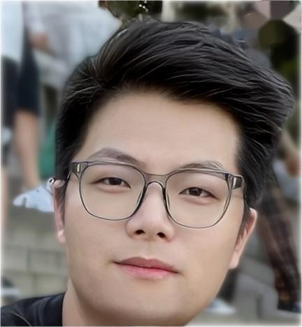
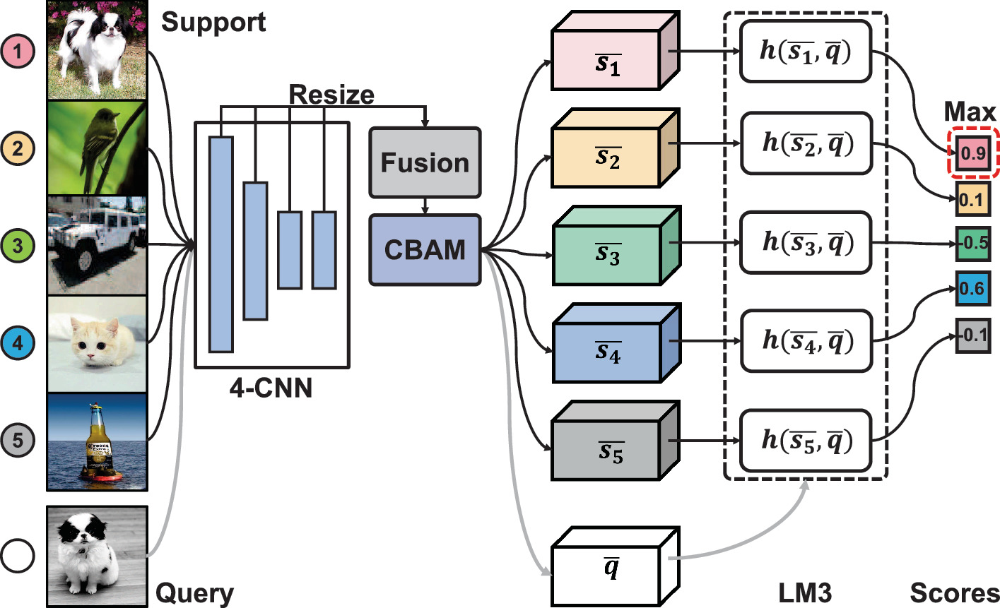

|  |
Yaohui Li
(李耀辉)
|
Research Interest
I work in the field of few-shot learning, meta-learning and transfer learning. Currently, I focus on the following research topics:- Intelligent perception with Limited Data: Learning with limited data effectively is an essential and promising topic in both industry and academia. I mainly work on learning transferable representations for fast adaptation with limited data and its applications in personalized affective computing.
Education and Intern
-
2021.6-2022.7 CV RI, Intellisense and Interaction Department, OPPO Research Institute, Shanghai, China.
-
2020.9-NOW M.S. in Automation and Artificial Intelligence Group, Nanjing University, Nanjing, China.
-
2016.9-2020.6 B.Eng. in Automation, Nanjing University, Nanjing, China.
|
|
|
|
|
|
Preprints
-
Yaohui Li , Huaxiong Li, Haoxing Chen, Chunlin Chen.
Hierarchical Representation based Query-Specific Prototypical Network for Few-Shot Image Classification.
arXiv preprint arXiv: 2103.11384 , 2021.
[Paper] -
Haoxing Chen , Huaxiong Li, Yaohui Li, Chunlin Chen.
Sparse Spatial Transformers for Few-Shot Learning.
arXiv preprint arXiv: 2109.12932 , 2021.
[Paper] [Code]

|
|
|
|
Publications
-
Yaohui Li, Yuzhe Yang, Huaxiong Li, Haoxing Chen, Liwu Xu, Leida Li, Yaqian Li, Yandong Guo.
Transductive Aesthetic Preference Propagation for Personalized Image Aesthetics Assessment.
In: ACM International Conference on Multimedia (ACM MM), 2022. (CCF-A)
[Paper] -
Haoxing Chen , Huaxiong Li, Yaohui Li, Chunlin Chen.
Multi-level Metric Learning for Few-shot Image Recognition.
In: International Conference on Artificial Neural Networks (ICANN), 2022. (CCF-C)
[Paper][Code] -
Haoxing Chen , Huaxiong Li, Yaohui Li, Chunlin Chen.
Shaping Visual Representations with Attributes for Few-Shot Recognition.
IEEE Signal Process. Lett., vol. 29, pp. 1397-1401, 2022. (CAA-B, SCI/SCIE, Impact Factor: 3.201)
[Paper] [Code] -
Haoxing Chen , Huaxiong Li, Yaohui Li, Chunlin Chen.
Multi-scale Adaptive Task Attention Network for Few-Shot Learning.
In: International Conference on Pattern Recognition (ICPR), 2022. (CCF-C)
[Paper] [Code] -
Shen Zhang , Huaxiong Li, Yaohui Li, Xianzhong Zhou, Chunlin Chen.
Reducing Differences Between Real and Realistic Samples to Improve GANs.
In: IEEE International Conference on Networking, Sensing and Control (ICNSC), 2021. (EI)
[Paper] -
Yaohui Li , Huaxiong Li, Haoxing Chen, Chunlin Chen.
Local Mutual Metric Network for Few-Shot Image Classification.
In: Chinese Conference on Pattern Recognition and Computer Vision (PRCV), 2021. (EI)
[Paper]

|
|

|
|

|
|

|
|
|
|
|  |
|
Awards and Honors
- National Scholarship, highest scholarship in China, 2022
- Outstanding Student, Nanjing University, 2021
- Industrial Bank Scholarship, Jiangsu Province, 2021
- 1st Prize, Academic Scholarship, Nanjing University, 2020 & 2022
- National Special Award, Educational Robot Competition Of China (ERCC), 2018